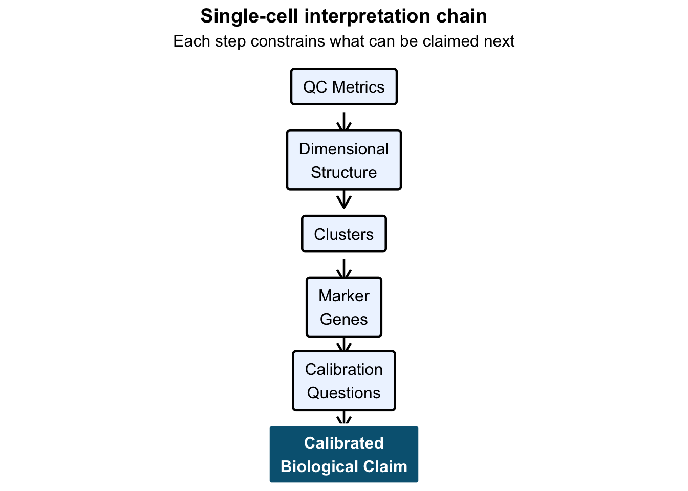

Lesson 6: From Clusters to Calibrated Biological Claims
Why This Lesson Matters
By now we have:
- Performed QC
- Identified technical structure
- Reduced dimensionality
- Clustered cells
- Identified marker genes
Many analyses stop here.
But clustering plus markers is not biological truth.
This lesson formalizes the reasoning discipline required before making biological claims.
The Single-Cell Interpretation Chain
This diagram is the discipline behind the workflow.
Each step constrains what can be claimed next.
If you skip a step, confidence inflates faster than evidence.
Step 1: QC Constrains Interpretation
From earlier lessons:
- percent_mt aligned with a principal component
- One cluster showed elevated mitochondrial signal
This means some structure may be technical.
Before labeling a cluster, ask:
Is this biology — or is this QC structure?
If a cluster aligns with:
- High mitochondrial percentage
- Extreme library size
- Batch separation
Then biological claims must be restricted.
Step 2: Structure Precedes Meaning
PCA revealed separation.
Clustering detected groups.
But clustering answers only:
Which cells are similar in reduced space?
It does not answer:
What biological identity they represent.
Structure is geometry.
Biology is explanation.
Step 3: Markers Provide Evidence, Not Identity
From the volcano analysis:
- Effect sizes aligned with statistical evidence
- Signal survived multiple testing correction
- Separation was coherent
This confirms transcriptional distinction.
But distinction is not identity.
Marker genes must be:
- Biologically coherent
- Functionally interpretable
- Consistent with known pathways
- Evaluated in context
Markers support claims.
They do not define them.
Step 4: Calibration Questions
Before making a claim, ask:
- Does the cluster align with QC metrics?
- Is separation driven by batch?
- Are markers biologically plausible?
- Are effects large and stable?
- Could this reflect activation state rather than cell type?
- Do multiple analytical layers agree?
If answers are uncertain, the claim must be conservative.
Calibration is not hesitation.
It is discipline.
When the Chain Breaks
Not all analyses move cleanly through the chain.
Three common failure modes:
1️⃣ Strong Markers, Weak Structure
Markers appear significant, but PCA shows poor separation.
Signal may be unstable or overfitted.
2️⃣ Clear Clusters, No Coherent Markers
Clusters exist geometrically, but differential genes are weak.
This may reflect gradients rather than discrete cell types.
3️⃣ QC Alignment With a Cluster
If a cluster strongly aligns with percent_mt or library size,
the “biology” may reflect stress or technical variation.
When layers disagree, confidence decreases.
Calibration means slowing down when signals conflict.
Internal Consistency Increases Confidence
Strong analyses show alignment across layers:
- QC does not dominate structure
- PCA separation is stable
- Clusters are geometrically coherent
- Marker genes are statistically strong
- Biological interpretation is plausible
When these agree, confidence increases.
When they conflict, interpretation must narrow.
Example of Calibrated Language
Overconfident statement:
Cluster 1 represents activated immune cells.
Calibrated statement:
Cluster 1 shows strong transcriptional separation and marker enrichment consistent with an activated immune-like profile, though QC-driven stress effects cannot be fully excluded.
The second statement respects uncertainty.
That difference is scientific maturity.
What This Free Track Established
You have learned:
- How technical variation enters single-cell data
- How structure emerges in reduced space
- Why clusters are hypotheses
- How markers quantify separation
- How to calibrate biological claims
This is not just a workflow.
It is a reasoning framework.
Final Takeaway
Single-cell analysis does not fail because of tools.
It fails when interpretation outruns calibration.
A cluster is a pattern.
A marker is evidence.
A claim is a responsibility.
That is the difference between running code and doing science.